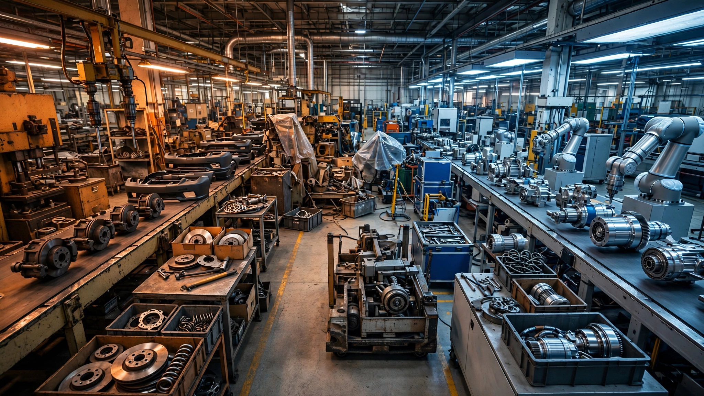

🤖 Robotics
Korea's Auto Suppliers Are Dumping Bumpers for Actuators. The Margin Math Says They Should.
Hyundai Mobis is selling its bumper division and buying its way into robotics actuators. The break-even math: 9,250 humanoid robots. Hyundai alone plans 25,000 Atlas units by 2028.

Hyundai Mobis's operating margin was 15.7% in 2011; last year it was 8.66%, halved in fourteen years. The world's fifth-largest auto parts maker posted record revenue of $42.67 billion in 2025, earned a record $2.35 billion in operating profit, and still watched its profitability slide toward single digits because the parts business that built it is slowly grinding toward commodity pricing and Chinese competition.
So Mobis is doing something unusual. It put its bumper division on the block in March, its second legacy ICE divestiture this year after selling its lighting business to France's OPmobility, and what it's buying into is actuators, sensors, and integrated joint modules for humanoid robots — not as a hedge, but as a replacement.
This is the trade happening across South Korea's auto parts sector right now, and nobody has run the margin math on it. We did.
The calculation
Start with what Mobis is shedding. Bumpers are high-volume, low-complexity auto components with industry operating margins for exterior body parts typically running 3–4%, sometimes less when raw material costs spike. Assume Mobis's bumper business generates roughly $1 billion in annual revenue at a 4% operating margin — that's $40 million in operating profit.
Now consider what a factory line produces when it pivots to precision robotics actuators instead. A single harmonic-drive actuator assembly for a humanoid joint retails for $500 to $1,245 per unit at current volumes, dropping to $400–$600 at scale, depending on torque rating and reduction ratio. These are precision-machined, quality-certified components with tolerances measured in arcseconds, and they command the same kind of margin structure as semiconductor equipment or medical devices: analysts covering the Korean supply chain estimate 15–20% operating margins once volume production begins, roughly double the mature auto parts baseline.
A single humanoid robot requires 28 to 56 actuators. Boston Dynamics' Atlas has 56 degrees of freedom; Tesla's Optimus uses 28 in its body with 22 more in its hands. At an average price of $600 per actuator assembly and 40 actuators per robot, the actuator content per humanoid is approximately $24,000.
The break-even question writes itself: if Mobis redirects $1 billion in bumper capacity toward robotics actuators at an 18% operating margin, how many robots' worth of actuators does it need to sell to match the $40 million it gave up?
$40 million divided by 0.18 equals $222 million in required robotics revenue, and dividing that by $24,000 in actuator content per humanoid gives the answer: 9,250 robots.
Hyundai Motor Group plans to deploy 25,000 Atlas humanoid robots across its own factories starting in 2028 — 2.7 times the break-even volume, from a single customer that happens to be Mobis's parent company, before a single external order lands on the books.
Why Korea, specifically
Three structural advantages explain why this particular pivot works better for Korean suppliers than for anyone else attempting it.
First, chemistry. LG Energy Solution secured battery contracts with all three of the top US humanoid robotics developers in July: Tesla, Boston Dynamics, and one undisclosed company. Humanoid robots need 2 to 4 kilowatt-hours of battery crammed into a torso cavity while simultaneously delivering high discharge rates to dozens of joint motors and an onboard AI computer. That power-density profile exposes the limits of China's dominant lithium iron phosphate chemistry and plays directly to Korean strengths in ultra-high-nickel cylindrical cells. As NH Investment researcher Ju Min-woo told the Korea JoongAng Daily: "Most humanoid robots unveiled so far rely on high-nickel cylindrical batteries optimized for high output."
Second, the Optimus supply chain gap. Morgan Stanley estimated that excluding Chinese components from Tesla's Optimus Gen 2 would raise the bill of materials from $46,000 to $131,000, and Korean suppliers sit squarely in the pricing sweet spot between Chinese commodity and American premium. HL Mando, which already makes actuators for Boston Dynamics' quadruped Spot, is expanding North American production specifically to supply Optimus Gen 4, deliberately skipping Gen 3 because its supply chain is locked to Chinese vendors.
Third, the Hyundai captive loop. When your parent conglomerate is simultaneously the world's third-largest automaker, the owner of Boston Dynamics, and the operator planning 25,000 Atlas deployments, your first customer is guaranteed without a cold call. McKinsey partner Ani Kelkar told KED Global he expects Korean companies to lead the hardware segment of the global robotics industry. Investors seem to agree: $68 billion in market value has flowed into Korean humanoid supply chain stocks since January.
What this analysis doesn't prove
Robotics operating margins of 15–20% are analyst estimates, not reported figures. None of these companies break out robotics-specific financial results yet, and early production runs could burn through margins faster than the projections assume. Actuator manufacturing at scale has different yield curves than bumper stamping, and precision machining failures are expensive in ways that bent plastic is not.
Hyundai's own investor presentations are the source for the 25,000 Atlas figure. No independent party has verified whether the 2028 deployment timeline is realistic, and Boston Dynamics has historically been better at demos than at volume manufacturing. If the Georgia Metaplant deployment slips by two years, the Korean supply chain's captive demand thesis goes from comfortable to strained.
McKinsey's $370 billion global robotics market projection is exactly that. Forecasting nascent markets is one of the few activities less reliable than long-range weather prediction, and McKinsey has an institutional incentive to make the number large because its clients are the companies spending capital on this pivot.
The strongest case against
Volume. The entire global humanoid robot market in 2026 might generate $2–5 billion in revenue; Hyundai Mobis alone does $42.67 billion. Even with aggressive growth, humanoid robotics revenue won't meaningfully replace automotive revenue for at least a decade, which means the margin-multiplier math only works at the margins, literally, as a way to swap out the lowest-profit lines and replace them with higher-margin specialty work. It's portfolio pruning, not a business transformation. The Korean auto parts sector isn't becoming a robotics industry so much as tacking a high-margin robotics wing onto a massive low-margin auto body.
That's probably fine, but it's honest to say it.
The Bottom Line
Nine thousand two hundred fifty. That's the number of humanoid robots' worth of actuators Hyundai Mobis needs to sell to replace the operating profit from the bumper line it's shedding. Its own parent is buying 2.7 times that volume. The conversion math is not even close to a hard call, which is why Mobis isn't the only Korean supplier doing it: HL Mando, Hyundai Wia, and a dozen smaller firms are all scrambling to retool. When an industry's margins have been halving for fourteen years and a new customer class offers double the profitability on comparable manufacturing complexity, the math isn't just persuasive. It's compulsory.
What You Can Do
If you're a manufacturing worker in a legacy auto parts plant, the Korean playbook is your leading indicator by about three to five years; the retooling wave that's hitting Ulsan and Changwon now will reach tier-two suppliers in Europe and North America next, and the positions that survive will be the ones requiring precision machining certification, not stamping-press operation. If you're investing in Korean equities, the supply-chain stocks trading at auto-parts multiples while pivoting to robotics margins represent an arbitrage that closes when the first quarterly earnings reports break out robotics revenue separately, probably sometime in 2027. If you run an auto parts business outside Korea, the question is whether your factory floors can physically produce components with arcsecond tolerances, because that's the barrier to entry that separates the suppliers who ride this wave from those who watch it.